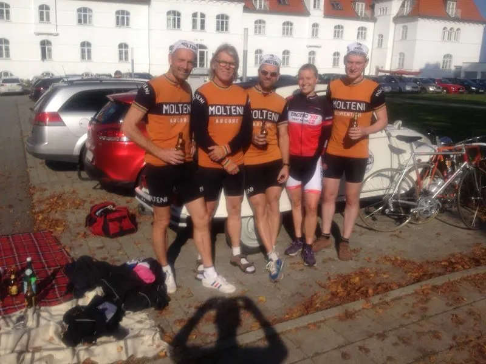
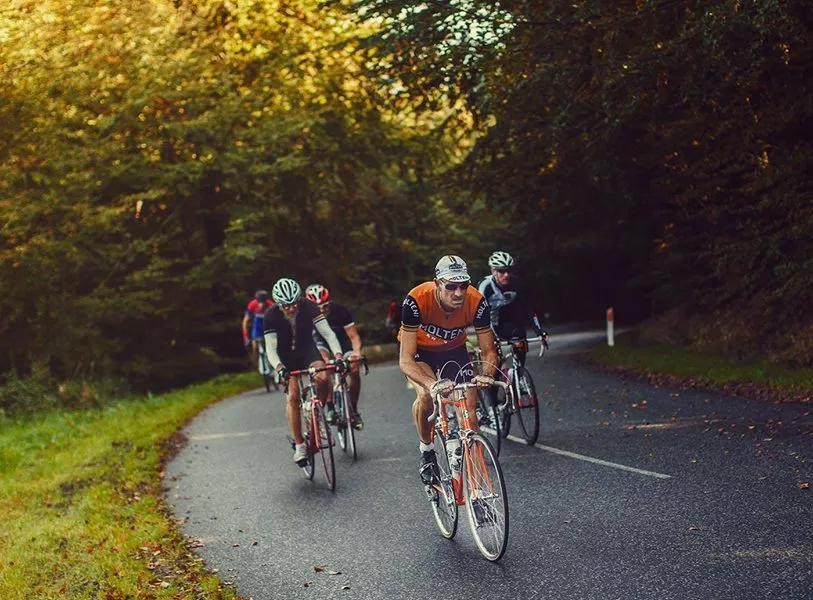
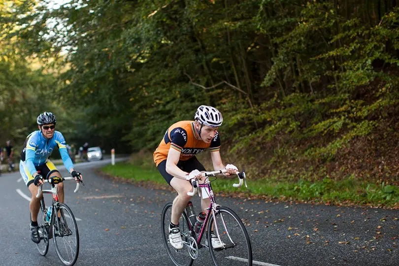
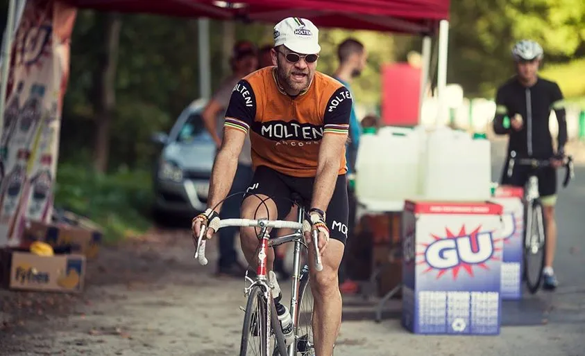
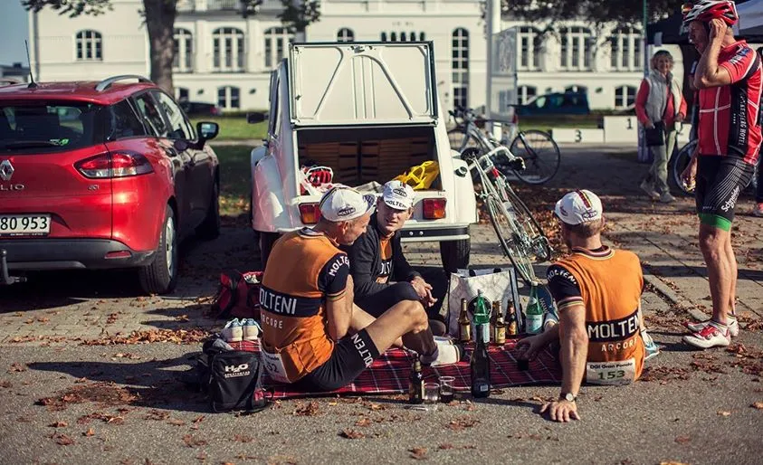

Gran Fondo Munkebjerg 2014: Podieplads til Squadra Molteni

På en fantastisk lækker sommerdag i oktober stod DGI som værter for motionsløbet Gran Fondo Munkebjerg, der blev kørt på en fantastisk kuperet og smuk 40 km rundstrækning langs Vejle Fjords sydside – med start og mål på det klassiske smukke Comwell Kellers Park i Brejning.
Squadra Molteni’s Per Hansen kørte sig til en sejr i H40 (og en flot 3. plads samlet) på 80 km distancen ved DGI Gran Fondo Munkebjerg.
Niels Bjørnsteen kørte sig til en 3. plads i H40 (og en 7. plads samlet).
Squadra molteni stillede til start ved Gran Fondo Munkebjerg med 4 mand: Niels Bjørnsteen, Per Hansen, Kasper Sørensen og Finn Birk.

Skøn stemning inden start.
Det var sæsonens sidste løb, det var samtidig Kaspers første løb i Molteni-farverne – og allerede inden start, så vi frem mod 3. halvleg med vino og belgisk øl.
Vi fik også fornøjelsen af at få en god snak om vintage-cykling med Mads Herschend, eliterytter og arrangør af Copenhagen Classico. Mads har heldigvis kommet sig over sig frygtelige ulykke i foråret.
Afsted med lyn og torden
Der var samlet start for de to distancer – 80 og 120 km. Men inden vi kunne nå at spænde tåclips, var der lagt fra land som lyn og torden.
Nogen ryttere i stramt siddende badedragtlignende outfit fra et par supermotionshold gav den fuld skrue fra start. Der resulterede i en koldstat, der mest af alt minder om en Lada, der efter 3 måneders henstand i russisk vinterkulde, æterstartes og så får den 120 km/t med klampen i bund i første gear…
Feltes blev lynhurtigt splittet i 3-4-5 mindre felter. Og endnu længere bagude lå de ryttere, som var punkterede på begge lunger. Per Hansen fik med vanlig overblik og bjørnekræfter hægtet sig på hovedfeltet. Niels Bjørnsteen lå lettere lidende i forfølgerfeltet, som dog efter små 20 km fik kontakt med hovedfeltet.
Voldsomme ryk
Både Per og Niels måtte slippe det voldsomt opskruede tempo – og fik koblet sig på et pænt stort forfølgerfelt.
Godt 5 km inden Munkebjerg rykkede Per fra gruppen og nåede op til en mindre gruppe længere fremme, som bestod af ryttere, der faldt fra det overophedede hovedfelt.

Finn Birk var uheldig – og punkterede hele to gange på første omgang, hvorefter han måtte at udgå.
Kasper Sørensen punkterede også – men det var på bege lunger på grund af koldstarten og det opskruede tempo.

Det var ikke lige den bedste kost efter en gang influenza – så Kasper stod også af efter første omgang. Per lå derimod 5’er i 80 km-feltet efter første omgang – og lige efter kom Niels på en 7’ende plads.
Både Per og Niels havde gode ben – og den teknisk svære rute passede dem fint. Per fik på 2. omgang kæmpet sig endnu længere frem – og endte på en flot 3. plads i det samlede 80 km-felt.

En placering der endda rakte til en klar førsteplads i H40-klassen.
Også Niels fik på 2. omgang kæmpet sig godt igennem og bibeholdte sin 7’ende plads i det samlede 80 km-felt. Den placering rakte til en 3. plads i H40 klassen.
Efter løbet var der i indskrivnings- og podieområdet ved det smukke Comwell Kellers Park samling ved Squadra Molteni’s teambil.

3. halvleg med belgisk øl og italiensk vino.
Mens vi sad og hyggede i den bagende sol, kom de første ryttere i mål fra 120 km-distancen, som var endt i et spurtopgør.
Flot og hurtigt kørt – ingen tvivl om det.
Men efter deres målgang, satte rytterne kursen mod løbledelsens pavillon i indskrivnings- og podieområdet. Her kom rytterne bragende, råbende og med bævrende underlæbe hen mod løbsledelsen.
Ud igennem deres fantomdragter og aerohjelme kom der, med tydelig panik og gråd i stemmen, beskyldninger som; ”det er en livsfarlig rute” og ”ruten var jo ikke afspærret for trafikken”.
Ikke nok med, at rytternes åbenlyse pinlige opførsel og optøjer afføde, at alle omkringstående måbende vendte sig om – så skete der også det, at Per Hansen blev så forbavset over de rytternes teenageragtige opførsel, at han kom til at spilde god italiensk vin på sine merinould-cykelbukser.
Katastrofe! Og i et kort øjeblik sås, at Niels Bjørnsteens solbriller dukkede samt at der kom en dyb Clint Eastwood-agtig rynke mellem øjenbrynene! Men heldigvis besindede både Per og Niels sig – og lod mændene i badedragterne få afløb for deres fustrationer og udvise et skoleeksempel på dårlig stil og opførsel.
Squadra Molteni anerkender disse supermotionisters sportslige formåen og præstationer. Vi anerkender også, at disse supermotionshold leger prof-hold. Det gør vi jo også – blot med 40-50 år tidsforskydning.
Livet er også til for at lege. Og alle motionsryttere leget, når de kører motionsløb. De udlever deres passion. Men hvis man tager legen alt for alvorlig – så udelæger man både legen og passionen.
Fantastisk arrangement
Squadra Molteni vil takke DGI for et fantastisk arrangement, setup – og en rute, som havde det hele.
Og nej, den var ikke livsfarlig.
Den var teknisk! Vi vil også takke Anders Wurcel for altid at være klar med reservedele, ekspertise – og et hyggeligt værksted-rendevouz.
Anders havde Pers styrfittings under behandling aftnen inden løbet – og påførte dem en mikstur af lock-tight og italiensk øl … og det virkede.
Sidst men ikke mindst vil Squadra Molteni også takke Max Nielsen, der med sans for timing og radarblik fandt både Niels og Per på 2. omgang – og langede dem iskold Jolly Cola ud gennem bilvinduet.
Verdensklasse!